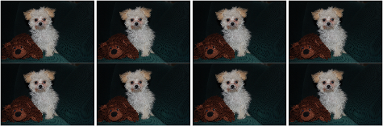
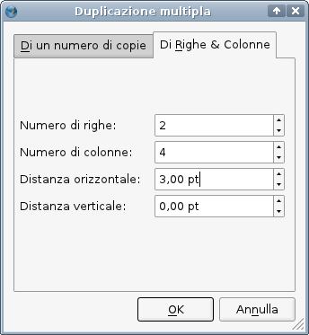
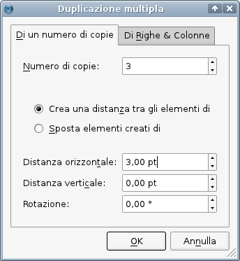
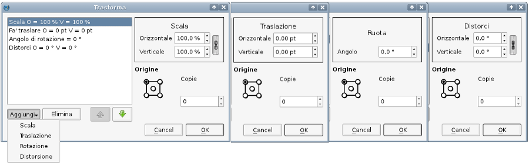
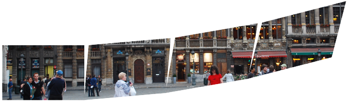

Duplicazione multipla e trasformazione
La duplicazione precisa di oggetti su una pagina è una caratteristica importante di qualunque applicazione per l'impaginazione o il disegno. Anche se è sempre possibile duplicare un'oggetto con una semplice operazione di copia e incolla, far calcolare al computer la posizione dei duplicati rende la vita più facile e può far risparmiare molto tempo. Scribus offre due strumenti potenti e versatili per la creazione e il posizionamento di oggetti copiati: Duplicazione multipla e Trasformazione. Per certi aspetti questi due strumenti sono molto simili, ma ciascuno offre un approccio leggermente diverso per la creazione di copie di oggetti sulla pagina.
Duplicazione multipla
Premettiamo brevemente che la duplicazione (Elemento > Duplica o Ctrl+D) è un'operazione semplice che crea una copia dell'oggetto selezionato, spostata di 10 pt sia in orizzontale sia in verticale. Se desiderate che l'oggetto duplicato venga posizionato in modo diverso, usate la Duplicazione multipla facendo una sola copia.
| Nelle versioni precedenti alla 1.3.5, la duplicazione multipla (Elemento > Duplicazione multipla) consisteva semplicemente nel creare una o più copie di un oggetto con ciascuna copia spostata di una certa distanza orizzontale e verticale rispetto alla precedente. Può ancora funzionare in quel modo, ma prima esaminiamo un modo di usarlo che potrebbe essere più utile: creare righe e colonne. Non viene creata una vera e propria tabella, ma una serie di copie dell'oggetto disposte sulla pagina in righe e/o colonne.
Qui a destra vediamo la scheda “Di righe & colonne”. Le impostazioni nella finestra di dialogo danno come risultato il montaggio mostrato qui sotto. Un aspetto da notare è che “Distanza orizzontale” si riferisce agli spazi verticali tra le colonne.
|
| 
|
|  |
| Qui a destra vediamo l'altra scheda, “Di un numero di copie”. Il suo funzionamento è simile a quello della duplicazione multipla nelle versioni precedenti, ma anche qui è presente la possibilità di distanziare le copie tra loro, piuttosto che quella di applicare loro un certo spostamento fisso, che comunque resta possibile. Le impostazioni mostrate creeranno una delle righe di immagini dell'esempio precedente. Notate che 3 copie in aggiunta all'originale danno origine a 4 colonne.
C'è anche una casella di controllo chiamata Rotazione, che permette di applicare una certa rotazione a ciascun oggetto successivo. Nell'esempio qui sotto sono state create 3 copie, con una distanza di 8 pt e una rotazione di 10° tra l'una e la successiva.
La linea punteggiata è una guida posizionata in modo da mostrare che l'asse di rotazione è intorno al punto base, in questo caso l'angolo superiore sinistro della cornice. Notate inoltre che il contenuto ruota insieme alla cornice; vedremo poco più avanti che la Trasformazione si comporta in modo diverso riguardo a questo.
|
 |
 |
Trasformazione
Usata nel modo più semplice, la Trasformazione (Elemento > Trasforma) può modificare un oggetto in uno o più dei seguenti modi:
- scalatura
- traslazione
- rotazione
- distorsione
Ciascuna di queste operazioni può essere eseguita con altri comandi in Scribus, quindi usare uno di quelli presenti qui non è certamente un modo efficiente di modificare un oggetto. L'utilità della funzione Trasforma consiste nel fatto che vi permette di eseguire in successione più operazioni combinate tra loro, e che potete usarla per creare diverse copie di un oggetto, applicando le modifiche a ciascuna di esse, una dopo l'altra.
Ecco un montaggio delle varie opzioni quando selezionate queste operazioni:

Le possibili combinazioni di queste operazioni sono illimitate, quindi è necessario fare un po' di esperimenti per farsi un'idea dei diversi effetti che si possono ottenere. Esaminiamo un esempio semplice, in cui un'immagine viene traslata e ruotata di 10°. Concettualmente è simile all'esempio di duplicazione multipla presentato prima, ma il risultato è molto diverso:

Il processo è iniziato in modo simile, con una traslazione laterale e poi una rotazione, ma la traslazione successiva avviene lungo l'asse orizzontale ruotato della cornice 2, e il processo è ripetuto altre due volte; notate inoltre che l'immagine contenuta nella cornice non viene ruotata. Un fenomeno simile si verifica con le cornici di testo, in cui le righe di testo restano allineate orizzontalmente nella pagina, e non vengono ruotate insieme alla cornice. Inoltre noterete che il risultato sarà diverso se prima applicate la rotazione e poi la traslazione, quindi l'ordine delle operazioni è importante.
Ora osservate quest'esempio, realizzato con una traslazione di 140 pt e una scalatura al 60%. Oltre al ridimensionamento successivo delle immagini, che era atteso, notate che anche il valore della traslazione è stato ridotto per ciascuna copia, presumibilmente del 60%.

In questo esempio semplice degli effetti della distorsione, abbiamo combinato una traslazione di 130 pt e una distorsione orizzontale di 5°. Se avessimo applicato anche una distorsione verticale, le cornici avrebbero deviato in direzione verticale una dopo l'altra, in modo simile a quanto abbiamo visto prima con la rotazione.

In tutti gli esempi precedenti, nella cornice era contenuta un'immagine adattata alle dimensioni della cornice. Se l'immagine ha scala libera il comportamento è molto diverso: in questo caso l'immagine non viene spostata, ma ogni nuova copia della cornice è come una “finestra” o un'apertura posta in posizione diversa sopra l'immagine originale, che resta fissa; quindi le dimensioni dell'immagine stessa devono essere tali che una parte di essa sia visibile in ciascuna copia. Quest'operazione, quindi, funziona come se si incollasse un'immagine in un gruppo di cornici. Qui vediamo una traslazione di 130 pt, seguita da una distorsione orizzontale e verticale entrambe di 5°.

Possiamo evitare considerazioni di questo tipo sul contenuto quando usiamo la trasformazione su forme e poligoni. Una limitazione della trasformazione è che non esiste un'anteprima che possa darci un'idea del risultato finale, e non c'è modo di salvare un insieme di operazioni per poterle riutilizzare, quindi è necessario procedere per tentativi ed errori, e bisogna ricordare le impostazioni o prenderne nota. Chiarito questo, ecco un esempio di una trasformazione applicata a una freccia larga circa 41 pt, ruotata di 30° e traslata di 46 pt, in 11 copie:

Un po' di matematica ci è d'aiuto in questo caso. Una rotazione di 30° per 11 copie dà in tutto 330°, quindi ci aspettiamo che le 11 copie riempiano un cerchio, ed è proprio ciò che vediamo. Potrebbe essere necessario sperimentare con la traslazione o il punto base per tentare di ottenere l'effetto desiderato.